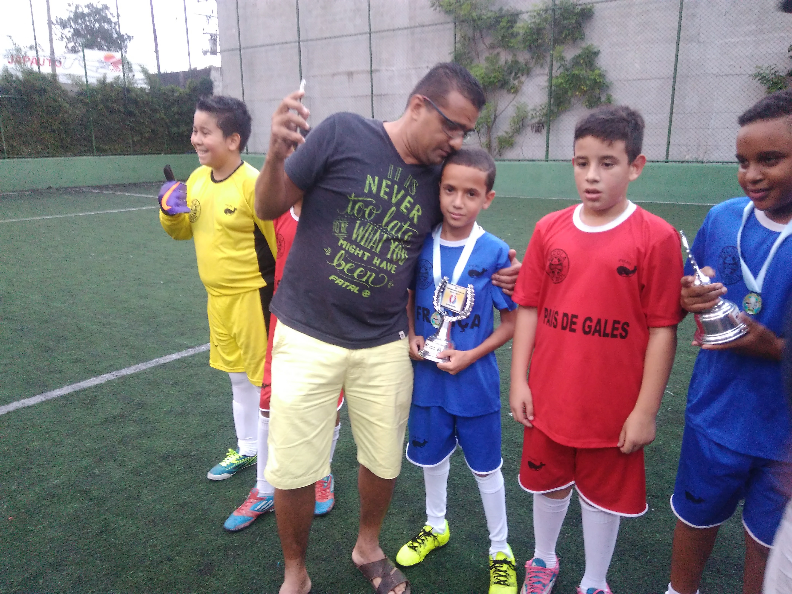
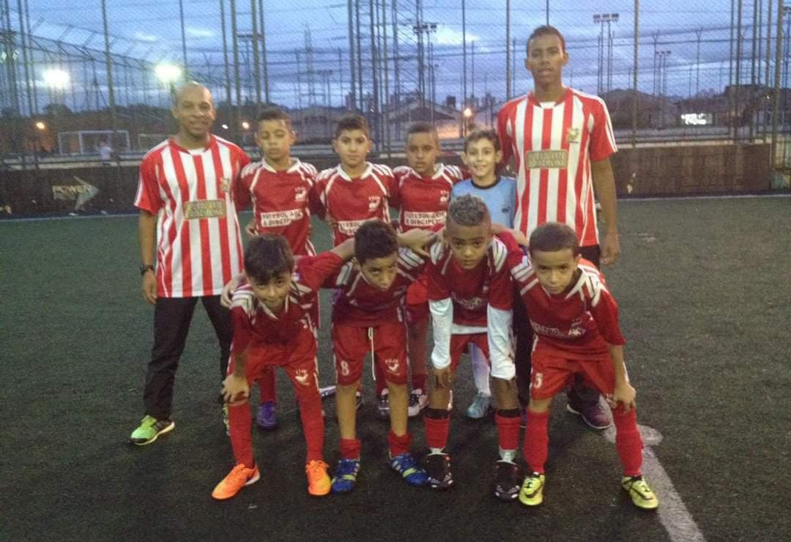

Minha paixão pelo futebol começou ainda na infância, quando esse esporte passou a fazer parte da minha vida.
Desde pequeno, tive o apoio da minha família, principalmente do meu pai,
que teve um papel muito importante nessa história.
Aos poucos, o futebol deixou de ser apenas um jogo e se tornou algo especial para mim,
criando lembranças que levo comigo até hoje.

Comecei a fazer escolinha de futebol na Fujii em 2016, e foi lá que minha paixão pelo esporte cresceu cada vez mais
Durante essa fase, aprendi coisas novas, fiz amizades e tive a oportunidade de melhorar minhas habilidades dentro de campo.
Eu gostava muito de participar dos treinos, jogar com os amigos e aproveitar cada momento, o que me fez gostar ainda mais do futebol.